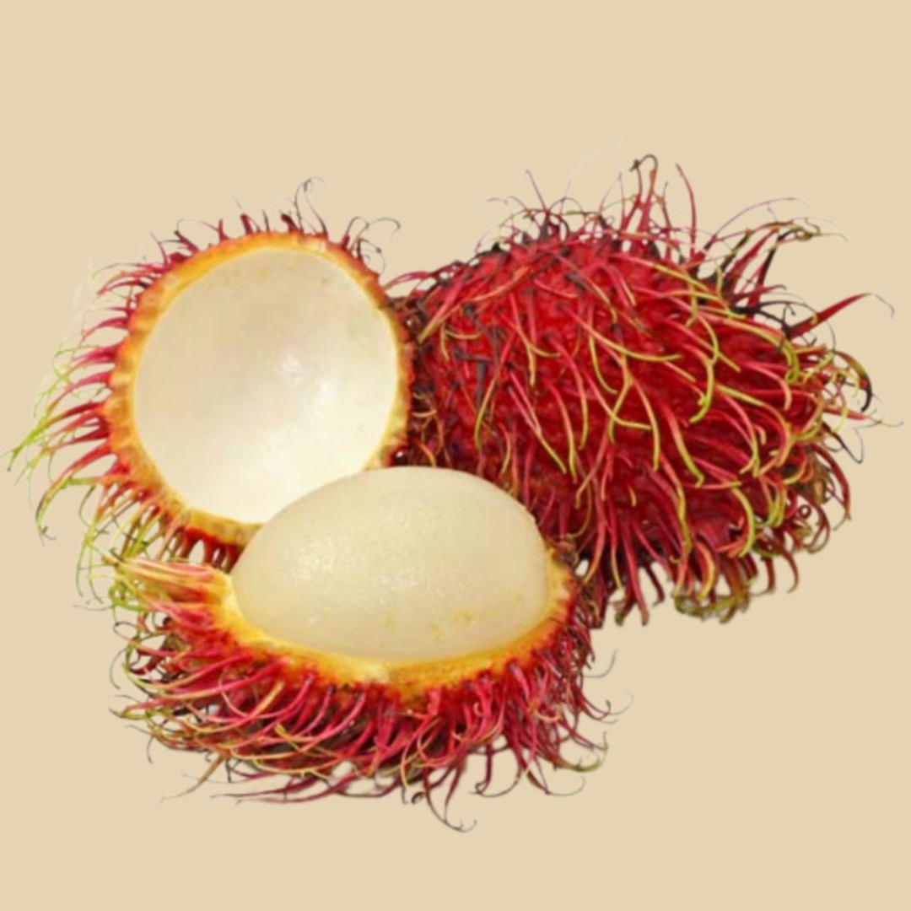

dimana buah ini mempunyai kulit berwarna merah pekat atau kuning cerah berserta rerambut yang terkeluar dari permukaan kulit dimana ia kerinting dan berwarna hijau di hujungnya. Isinya lutsinar dan ia mempunyai rasa yang dihalusi dengan bau yang manis tajam.
